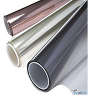
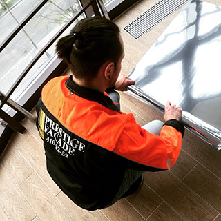
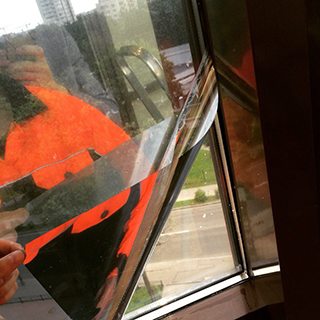
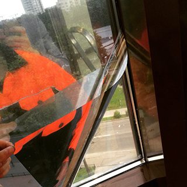

тонировка
архитектурными пленками

Команда Prestige Facade осуществляет профессиональную тонировку светотражающими пленками стекла и окон в Санкт-Петербурге и Ленинградской области.
нас выбирают
- торговые комплексы
- бизнес-центры
- офисы
- квартиры
- коттеджи
X
//= templates/calcuTonir.html
Стоимость
Стоимость зеркальных окон, оклейка вместе с материалом составляет от 1000 руб. за кв. метр поверхности. Осуществляется бронирование окон и тонировка офисных перегородок по цене от 1200 руб. за кв.метр поверхности. Гарантия на пленку и производство работ.
{kind=link}
Преимущества:
- Повышается прочность стекла
- Защита интерьера от выгорания поверхностей
- Индивидуальные расцветка стекла
- Безопасность при разбивании от осколков стекла
- Конфедициальность помещения
- Повышенная звукоизоляция помещения
 

{kind=link}
Тонируем по технологии, при которой не нужно разбирать конструкцию и вынимать стекло. Работы производятся мастерами своего дела в кратчайшие сроки.
{kind=link}
{kind=link}
{kind=link}
{kind=link}
{kind=link}
{kind=link}